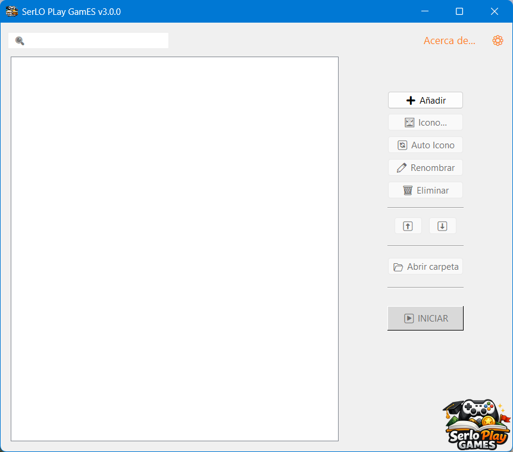
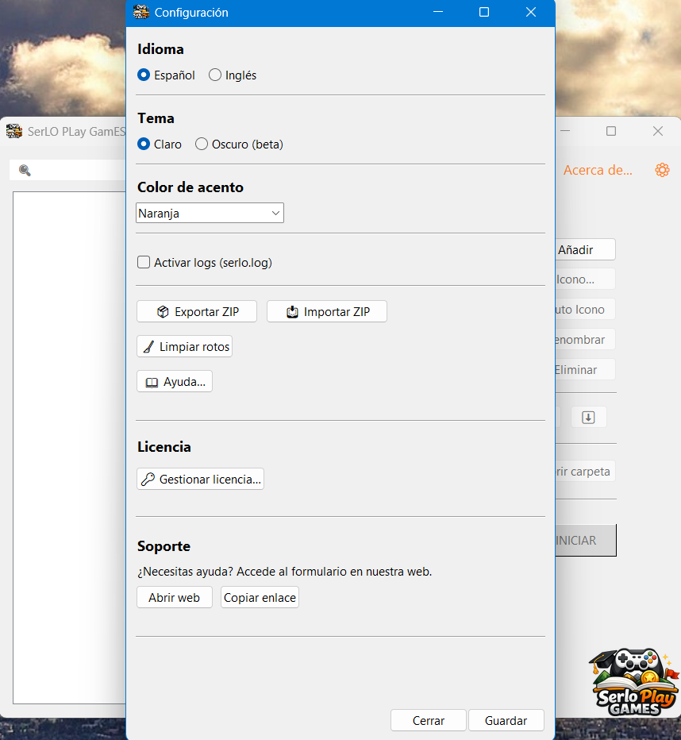
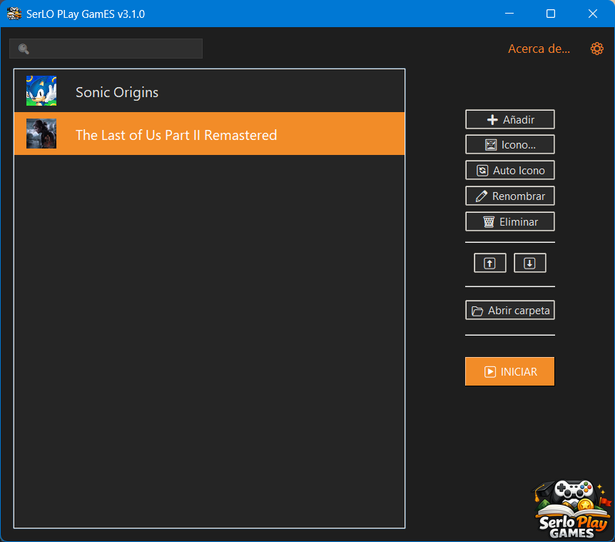
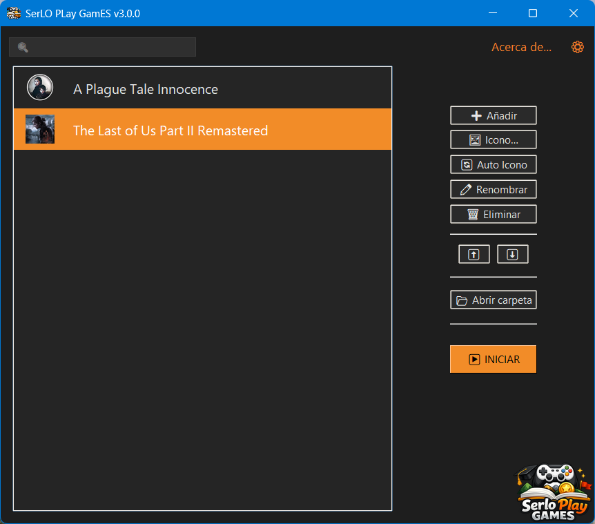

¿Qué es?
SerLO PLay GamES te permite organizar, lanzar y personalizar tus juegos (o cualquier otro software) desde un único lugar. Puedes usarlo para: - Juegos de cualquier plataforma - Programas o herramientas que uses habitualmente - Ejecutables (.exe) o accesos directos (.lnk) El launcher está pensado para centralizar y simplificar el acceso a tus aplicaciones favoritas..
Capturas




Cómo funciona
- Descargas y ejecutas el launcher (portable).
- Puedes probarlo en modo demo.
- La compra/activación se realiza dentro del programa.
Contacto
email.